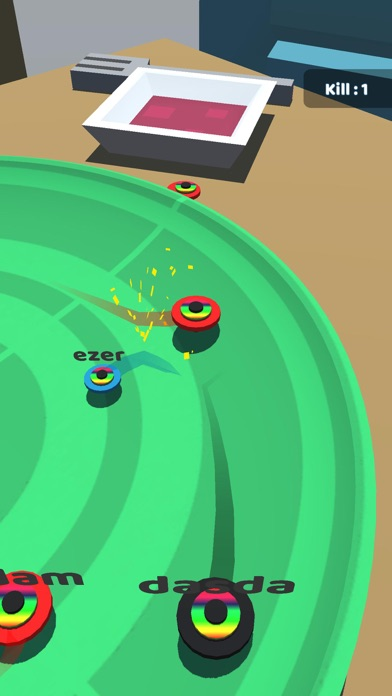
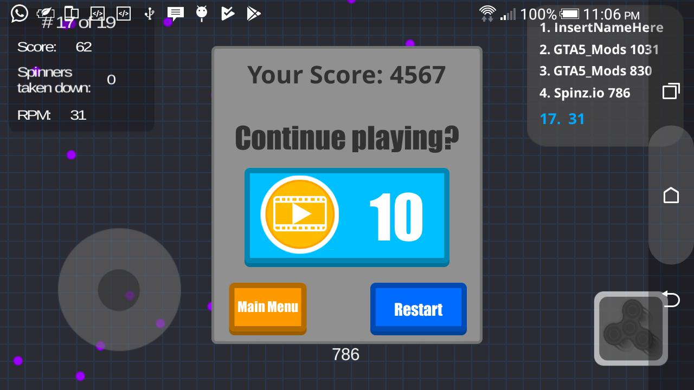
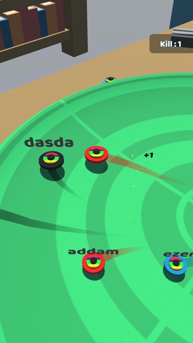

Spinner.io puts you in control of a spinning weapon attached to your character. The goal? Spin into opponents to deal damage and absorb them, growing larger with each kill. There's something deeply satisfying about building up a massive spinner and absolutely demolishing everything in your path. But getting there requires understanding the core mechanics.
Your spinner rotates continuously, dealing contact damage to anything it touches. The longer your weapon arm, the larger your hitbox—but also the slower you move. Balancing reach and mobility is key.
Growth System
Defeating opponents adds their mass to your character. Each absorbed enemy makes you bigger, which extends your spinner further. Growth is exponential—small advantages compound quickly.
Size Matters
Larger spinners have longer reach but move slower. Tiny players can dance circles around giants. However, even a small spinner deals damage on contact, so don't assume you're safe just because you're bigger.
⚙️ Core Mechanics
Core Mechanics
Movement
Your character moves with the mouse. The spinner rotates automatically around you. Position yourself so opponents collide with your weapon, not your vulnerable body.
Damage and Health
Contact with your spinner deals damage to enemies. Taking damage reduces your size slightly. If your size drops too low, you become vulnerable to being absorbed entirely.
Absorption
Defeated enemies don't just disappear—they get absorbed into your spinner, making it bigger and more powerful. This is how you go from struggling newbie to arena dominator.
⚠️ Collision Warning
Your own spinner can hurt you in certain situations. Don't trap yourself in corners where your weapon swings might damage you while you're trying to escape.
The Spinner Physics
Understanding spinner mechanics helps predict outcomes. Longer spinners hit first but are easier to dodge. Shorter spinners move faster through their rotation. The ideal length balances reach with responsiveness.
Character Versus Weapon
Your character's body can be damaged separately from your spinner. Protecting your character while maximizing spinner contact is the core skill. Body shots deal damage but don't absorb enemies.
⚔️ Combat Strategies

Combat Strategies
1. Circle Strafe Aggressively
Move around opponents constantly, keeping your spinner facing them. Your weapon's reach exceeds your body's, so circling keeps you in attack range while protecting your character.
2. Target Weaker Players
Early game, focus on smaller opponents. They're easier to catch and absorb safely. Avoid fights with significantly larger spinners until you've built some mass.
3. Use Obstacles
Walls and terrain features block movement. Corner opponents against obstacles and let your spinner do the work. Chased players often run into walls and become easy kills.
4. The Oscillation Approach
Instead of constant circling, oscillate toward and away from targets. This unpredictable movement makes you harder to hit while still maintaining spinner contact.
5. Defensive Spinning
When taking damage, spin faster to increase hit chance while backing away. Your spinner deals damage on contact, so even defensive spinning can discourage pursuers.
6. Reading Opponent Movement
Watch where opponents move and predict their path. Most players strafe predictably. Anticipate their trajectory and position your spinner to intercept their movement.
7. The Surround Strategy
Larger spinners can trap smaller players against walls. Corner opponents so their escape routes lead into your weapon. Confined spaces favor the defender.
8. Managing Growth
After growing significantly, slow down your aggression. Massive spinners are obvious targets. Play conservatively to protect your lead instead of extending it recklessly.
Spinner collision
💎 Pro Tips

Pro Tips
🏆 Pro Tip #1
Don't chase too far. Aggressive pursuit often leads into ambush zones. If an opponent runs deep into the map, they might be baiting you.
🏆 Pro Tip #2
Watch spawn points. Newly spawned players are tiny and helpless. Camp areas near spawns for easy early-game growth, but be aware others might do the same.
🏆 Pro Tip #3
Preserve momentum. When you're large and dominating, stay aggressive. Hesitation lets smaller players gain confidence and coordinate against you.
🏆 Pro Tip #4
Use map edges strategically. When cornered by larger players, move to edges where your smaller size might let you slip past their spinner range.
Ultimate spinner
❓ Frequently Asked Questions

Spinner battle arena
How do I make my spinner bigger in Spinner.io?
Defeat opponents to absorb them. Each absorbed enemy adds to your mass and extends your spinner reach. Focus on consistent kills to grow steadily.
Does being bigger always mean winning?
Not necessarily. Larger spinners move slower, making them easier to outmaneuver. Small players can defeat giants through superior positioning and movement.
What's the best strategy for beginners?
Start by targeting obviously smaller players. Avoid larger spinners until you've built confidence. Learn movement patterns that maximize spinner contact time.
Can I play with friends?
Check the game mode options. Team modes let you fight alongside friends, with coordination significantly improving your chances against solo players.
What happens when I die?
You respawn as a tiny spinner at a random location. All your accumulated mass vanishes, forcing you to rebuild from scratch.
How do I counter much larger players?
Avoid direct confrontation. Use obstacles, maintain distance, and wait for opportunities. Large players often become overconfident and careless.
📝 Related Games to Try
Spinner.io Gameplay
Love spinning combat? Try Dogod.io for evolution battles, Gulper.io for creature combat, or Flies.io for more insect-based action.
📝 Conclusion
Conclusion
Spinner.io is about aggressive momentum and spatial awareness. Build your spinner, stay on offense, and dominate smaller opponents. When you're the biggest spinner in the arena, nothing beats that feeling.
Start spinning and dominate! The arena awaits.
Last updated: January 20, 2024
Written by the iogameguide.com team
Our Verdict
Spinner.io is a chaotic, physics-based arena battler that perfectly captures the fleeting magic of the 2017 fidget spinner craze. It's incredibly simple but surprisingly satisfying to knock people off the edge, though it lacks the deep progression of heavier .io titles. A fun, quick-session time sink if you just want to smash things into the void.
★★★☆☆3/5
Similar Games You Might Enjoy
Sumo.io — Shares the exact same physics-based 'push your opponent off the platform' core loop.
Hole.io — Satisfies the same urge to swallow up smaller entities to grow your size and dominate the arena.
Slither.io — Offers a similar 'bump to eliminate' combat style but with a snake theme and more strategic trapping.
How It Compares
Game
Difficulty
Learning Curve
Player Base
Best For
Spinner.io
★★☆☆☆
Easy
Medium
Casual arena brawlers
Sumo.io
★★☆☆☆
Easy
Medium
Physics-based sumo fans
Hole.io
★★☆☆☆
Easy
Large
Quick mobile sessions
Slither.io
★★★☆☆
Moderate
Large
Competitive survivors
Common Mistakes New Players Make
Trying to hit the biggest spinner on the map right after spawning. → Focus on collecting scattered orbs to increase your mass and momentum before engaging top-tier opponents.
Spinning too close to the edge of the platform while trying to line up an attack. → Always keep at least one spinner-width of distance from the ledge, as physics knockbacks can easily send you into the void.
Ignoring the momentum and angle of your spinning top when colliding with others. → Hit opponents at a perpendicular angle rather than head-on to maximize their bounce-off trajectory without losing your own stability.
Panicking and mashing the movement controls when surrounded by multiple players in the center. → Stay calm and use the edge of the platform to funnel smaller spinners into each other while avoiding the biggest threat.
Last Updated: August 10, 2026
🎮 Controls & Mechanics Deep Dive
When you first drop into the arena, it’s easy to think Spinner.io is just about mashing the movement keys and hoping for the best. But if you want to actually dominate, you need to understand the underlying physics and control schemes. The game offers two primary ways to move: mouse control and keyboard (WASD/Arrow keys). Mouse control gives you incredibly fluid, 360-degree precision, making it easier to track fast-moving targets and adjust your angle on the fly. Keyboard controls, on the other hand, offer snappier, more rigid movement. If you prefer making sharp, sudden 90-degree turns to dodge incoming attacks, the keyboard is your best friend.
Let’s talk about the movement physics, because momentum is everything here. You aren’t driving a car; you’re controlling a spinning mass. When you’re moving at top speed and try to change direction, you’ll experience noticeable drift and inertia. This is where the size mechanic completely changes your handling. As you consume orbs and grow, your turning radius expands significantly. A massive spinner takes much longer to pivot, making you vulnerable to smaller, hyper-agile players who can dart in and out of your attack range. However, your acceleration and top speed remain relatively consistent, meaning your sheer mass becomes your primary weapon.
Collision mechanics and hitboxes are also a bit trickier than they appear. The actual damaging part of your spinner isn’t the entire circle—it’s the active, spinning outer edge. If you get clipped by the center of an enemy's blade, you’ll take minimal damage and lose a few orbs. But if you catch them squarely on the outer rim, the knockback and damage are massive. Always try to angle your approach so your outer edge sweeps across their hitbox. Finally, keep an eye on your boost meter if you’re using the dash mechanic. Boosting gives you a sudden burst of acceleration, but it temporarily widens your turning radius and leaves you vulnerable if you miss. Use it to close gaps or escape, never just to move faster in a straight line.
🎯 Game Modes Breakdown
Spinner.io isn’t just a single chaotic free-for-all; the different game modes completely change how you need to approach the match. Understanding the rules and objectives of each mode is half the battle.
Free-For-All (FFA): This is the classic, default experience. Usually packing 10 to 20 players, the objective is simple: be the last spinner standing or get the highest score before the timer runs out. There are no teams, no rules, and no mercy. The strategy here is highly opportunistic. You need to balance farming orbs in the early game with picking off distracted players. Paranoia is your best tool in FFA; always check your six.
Team Deathmatch: Splitting the lobby into two or more factions, this mode shifts the focus from individual survival to squad synergy. Player counts are usually smaller per team (like 4v4 or 5v5). The goal is to deplete the enemy team's combined lives or dominate the scoreboard. Communication and positioning are key. If you have a teammate who has snowballed into a massive spinner, play as their bodyguard. Clear out the small fry trying to chip away at them, and let your heavy hitter do the heavy lifting.
Battle Royale / Shrinking Arena: This mode adds a massive layer of endgame pressure. The arena boundaries slowly shrink over time, forcing players out of hiding spots and into the center. The objective is survival. You can’t just camp in the corners farming orbs; eventually, the zone will push you into the meat grinder. Positioning is critical here. You want to be near the edge of the safe zone but facing inward, giving you the high ground to attack players who are being forced into your line of sight.
Practice / Sandbox Mode: Don’t sleep on the practice area! While there’s no competitive objective, this mode is essential for testing out different spinner skins and getting a feel for the physics without the stress of getting ganked. Use this time to practice your drifting, test your turning radius at max size, and perfect your boosting timing.
🚀 Advanced Strategies & Pro Tips
If you’ve mastered the basics and want to climb the leaderboards, it’s time to look at the high-level tactics that separate the casuals from the arena veterans. These advanced strategies focus on positioning, resource management, and outsmarting your opponents.
Master the "Slingshot" Maneuver: Because of the game's momentum physics, you can use the arena walls to your advantage. If you’re being chased by a larger player, don’t just run in a straight line. Angle yourself toward the wall and bounce off it at the very last second. This sudden change in trajectory will often cause the pursuing player to overshoot you, giving you a free second to line up a counter-attack on their exposed side.
Advanced Resource Management & Orb Denial: Beginners just eat whatever orbs are closest to them. Pros actively deny resources. If you see a massive player trying to farm a cluster of orbs, don’t just challenge them head-on. Instead, use your agility to sweep up the外围 orbs, forcing them to move out of their comfortable farming spot. Make them chase you into tight corridors where their massive turning radius becomes a massive liability.
Psychological Plays and Feinting: Spinner.io is as much a mental game as it is a mechanical one. If you’re playing as a small spinner, fake a retreat. Drop a few orbs intentionally to look like you’re panicking, lure an overconfident, larger player into a corner, and then use your tight turning radius to spin around and catch them off guard. Conversely, if you’re the biggest player in the lobby, play aggressively. Chase down the small players even if you don’t plan to catch them; the sheer panic you induce will make them make mistakes, crash into walls, or run right into your teammates.
Endgame Positioning: When the match is down to the final two or three players, stop trying to land the perfect, game-winning hit immediately. Instead, control the center of the arena. Force your opponents to the edges. When players are near the boundary, they have limited escape routes. By controlling the middle, you dictate the pace of the fight. Wait for them to make a desperate dash or a poorly timed boost, and punish their overextension. Patience wins endgames.
❓ Frequently Asked Questions
How do I increase my size and score faster?
The biggest mistake new players make is fighting too early. For the first 30 to 60 seconds of a match, ignore the other players entirely. Stick to the outer edges of the map where the orb density is high and player traffic is low. Once you’ve reached a medium size, you can start taking calculated risks to finish off weakened players.
Is Spinner.io playable on mobile devices?
Yes, the game is fully optimized for mobile browsers! You can play it on your phone or tablet. However, the touch controls can feel a bit slippery compared to a mouse. If you’re playing on mobile, tap and hold to boost, and use short, deliberate swipes to change direction rather than long, sweeping gestures.
Can I play private matches with my friends?
Absolutely. You can create a private room and share the unique room link or code with your friends. This is the best way to practice your team coordination for Team Deathmatch or just mess around without randoms interrupting your game.
What are the system requirements to run the game smoothly?
Because it’s a browser-based .io game, Spinner.io is incredibly lightweight. It will run on almost any modern laptop or desktop, even older ones. However, to maintain a locked 60 FPS (which is crucial for competitive play), make sure you close background tabs, disable hardware acceleration in your browser if you experience stuttering, and use a stable wired internet connection to prevent lag spikes.